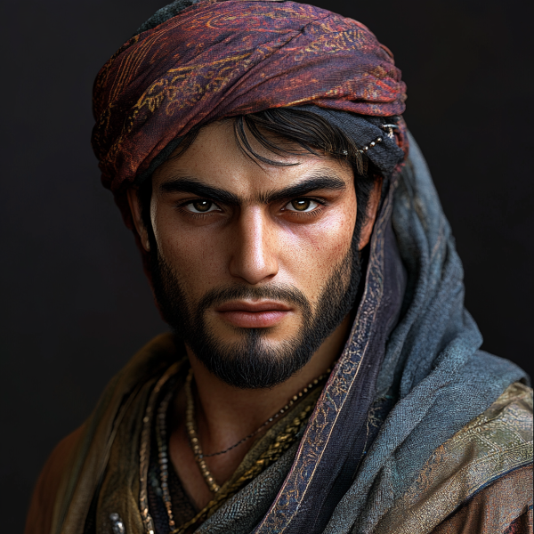
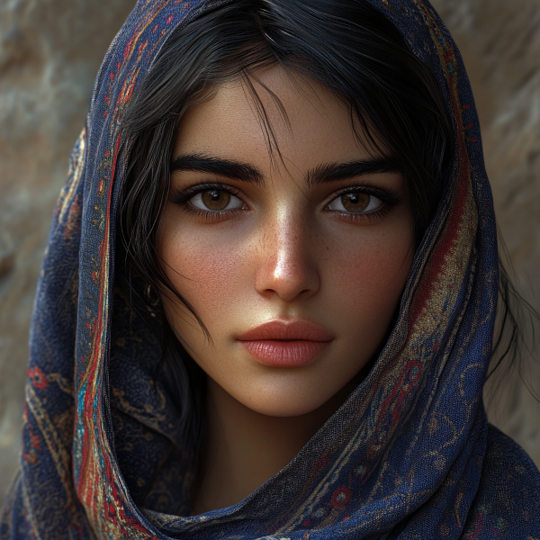

Figure 1: Aelthion Karrukos before his expedition

Figure 2: Aelthion becomes Althisa in his “accident”
Aelthion grew up in a poor household where his parents worked long hours to provide. His older sister played a significant role in his upbringing, often sharing her clothes with him due to financial constraints. These early experiences with wearing her clothing left him with ambiguous emotions—a mix of comfort, shame, and longing. His family celebrated when his mother finally afforded clothing suited for a young man, but this milestone stirred complex feelings, leaving him both grateful and strangely disoriented.
While Aelthion admired his sister’s confidence and grace, he struggled to reconcile his appreciation of her clothes with societal norms. These feelings persisted in secret, surfacing occasionally as a quiet desire to understand himself.
Aelthion’s brilliance in school earned him a prestigious scholarship that allowed him to study both medicine at the University of Naethanor. Being at the top of his class, he was offered the rare opportunity to practice an internship for historical studies at the Archivist Guild at the great Ornasion Library (largest library in Naurrnen), being able to blend his fascination with the past and his desire to shape the future.
While practicing his internship, he was given access to a forum hosted by the Hanashim Transcript Guild at the Laurië Citime library. It was here that he learned of an ancient Amearan device, belived to be used by the Amearans for medically treating mortifying injuries of patients, capable of not only completely restoring flesh tissue, but also altering the humors of the body, increasing the longevity of the patient being treated.
While publicly expressing his passion for advancing medicine in service of the Gran Imperio, Aelthion privately nurtured an obsession with personal achievement. He wanted to be celebrated as the discoverer of something monumental, an ambition fueled by tales of the Amearan medical device, burried deep underground.
Aelthion begins to solicit skilled archeological escavators from the surrounding city of Tanquende, where Laurië Citime Library is. He also solicits a few of his medical school colleagues, young and eager to explore the medical mysteries belonging to an ancient world long lost or forgotten. Among his colleagues was the young beautiful Adama woman, Isevara Caelain. Aelthion and Isevara had been courting. Aelthion was an attractive young man, and Isevara probably would not put up with his narcisism if not for his good looks.
During the expedition in the ancient Amearan ruin, Aelthion finds a medical lab designed to repair biological tissue, and provide any mechanical replacements that might be needed for tissue damaged beyond repair. In this lab was an observation pod, where the patient was suppose to lie to receive treatment. This was it! The device Aelthion had read about. The problem was when someone entered the pod, and it was activated, it would perform a full body scan of the patient’s body as they lay in the pod. The results would then show up in the apparatus HUD display, but it was totally unclear how to activate it to perform treatment.
Aelthion had spoke with Faelinoril Galathil, the famous Amearan scribe in Laurië Citime’s Transcript Guild, about the apparatus. Faelinoril tells Aelthion in answer to his inquiry about this strange pod, “Knowing the Amearans, they had some way of storing information in magcial energy fields. These devices have been found in political centers of the ruins as well, so they are not used just for medical purposes. More than likely, they kept a medical record of a patient, and then when it came time to use the med pod, it could reconstruct the patient to their original form based on that information.”
Aelthion manages to figure out how to get the pod working. He lays in the pod, and lets the pod perform tis full body scan on Aelthion. He then steps outside of the pod, and carefull cuts a small laceration on his arm with his knife. Then he steps back into the pod, and reactivates the pod. Aelthion is induced into a deep coma for just a minute or two, and when he awakes, his flesh has been completely restored to what it was before he cut it. His colleagues then each in turn step into the pod to get their intial body scans, including Isevara. Then out of a sudden whim, decides to put in his profile in as Isevara, and he locks himself into the apparatus. The pod encloses his whole body as before and induces Aelthion into a deep coma. His friends and colleagues try as they might to reopen the pod and awaken Aelthion, they are unable to do so. And to their horror, they begin to see the changes the pod makes to Aelthion’s flesh.
What he does not see, is nanobots begin working on Aelthion’s flesh trying to repair organic matter belonging to a woman. He is given female breasts, his bone structure is reconstructed to better suit a female body. The machine detects abnormally high testosterone levels and that the endocrin system is producing abnormally high levels of testosterone, and the body has high estrogen resistence. So the nanobots go about to reverse this in his system at a cellular level. Even reconstructing a makeshift womb and a female reproductive system that might actually work. His system is carefully reconditioned to favor estrogen and build up testosterone resistence. He is in this coma for a total of three months. No one was able to figure out to get him out. When he awakes, he sees that he has a female body. His voice is now much higher and softer. He is initially awestruck, and filled with great joy and excitement that he is now a she. Isevara looked at Altheon in shock. She reaches up to touch his face, “By the gods! You… you look exactly like me!”
It takes a couple days for his new reality to settle in as continues to try and re-engage the medical pod to turn him back. He never figures it out, his food supply running low, he starts to realize, he may never be able to reverse the effects. The day before his return, he starts getting his first menstruel cramps. At this time, he realizes, he will have to live as a she from now on.